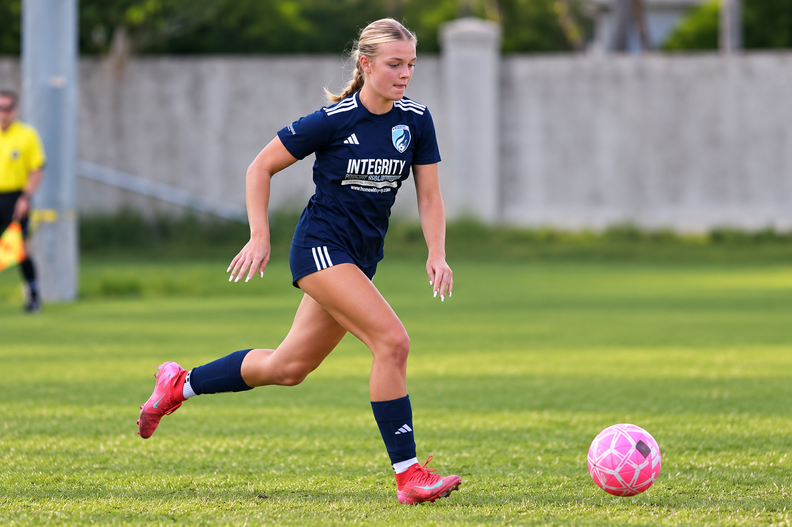
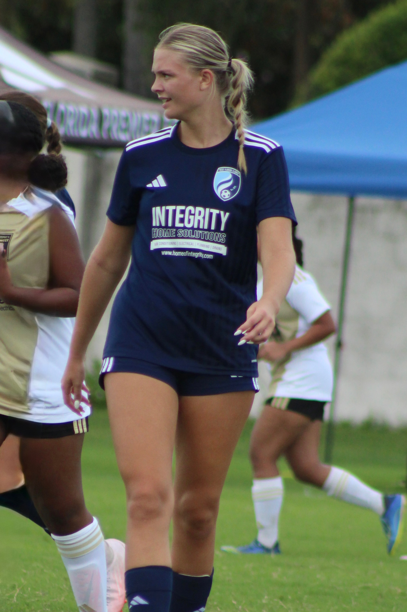

01
SOCCER PROFILE
Player Evaluation
A striker-focused view of Samantha’s technical ability, tactical understanding, athleticism, and position-specific qualities.
- Technical ability
- Tactical understanding
- Athleticism
- Position-specific qualities

CLASS OF 2027 · FORWARD / STRIKER
A 5'10" attacking forward combining athleticism, movement and a competitive presence in the final third.
RECRUITING PROFILE
A coach-first recruiting profile organized around the three dimensions that matter: the soccer player, the person, and the student.
SOCCER PROFILE
A striker-focused view of Samantha’s technical ability, tactical understanding, athleticism, and position-specific qualities.
PERSONAL PROFILE
The qualities Samantha brings beyond match day — character, coachability, work ethic, reliability and competitive mindset.
STUDENT PROFILE
Academic performance, college interests, academic fit and Samantha’s long-term educational and career goals.
PLAYER SNAPSHOT

FILM & PERFORMANCE
Highlight film coming next
Finishing · Runs in behind · 1v1 · Combination play · PressingWEST FLORIDA FLAMES
Official team schedule and results are connected to Samantha’s recruiting profile for easy coach access.
COACHING CONNECTIONS
COLLEGE COACHES
Recruiting contact information, verified coach details and additional film will be added here.
Recruit Samantha →